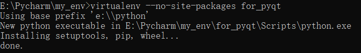
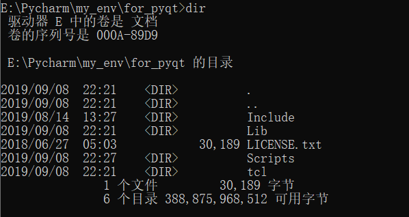
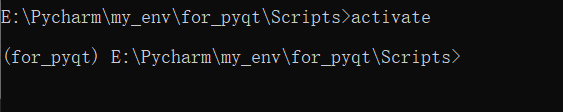
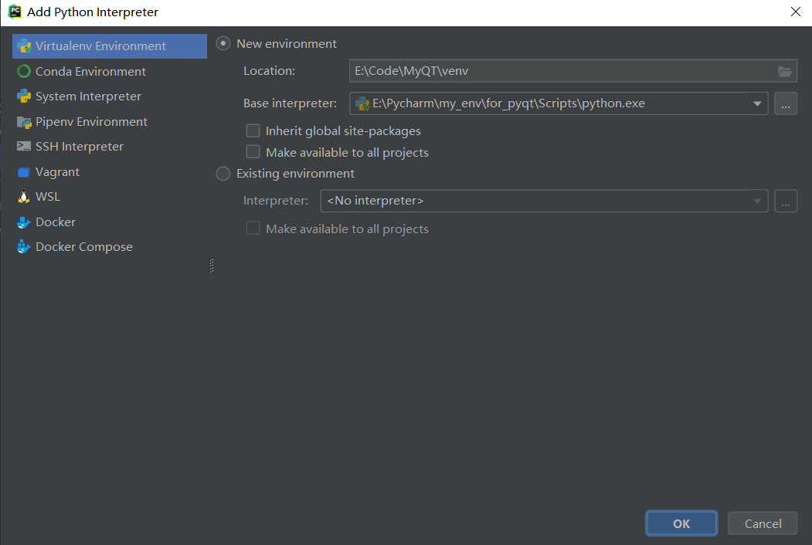
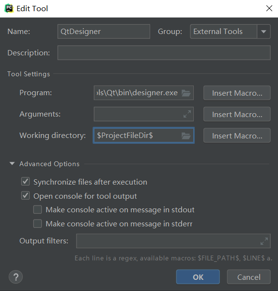
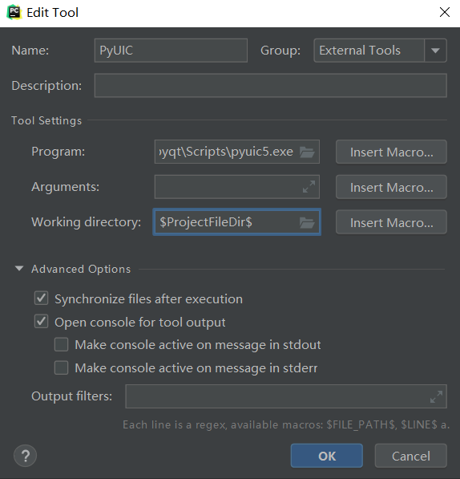
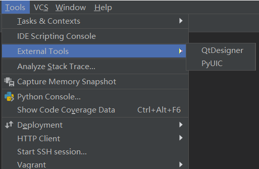
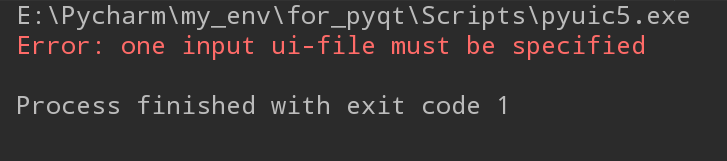

从学 Python 的第一天起，我就知道了使用 pip 命令来安装包，从学习爬虫到学习 Web 开发，安装的库越来越多，从 requests 到 lxml，从 Django 到 Flask，各种各样的库都处在一个 Python 环境之中。
这种做法对于我这种懒人来说是再适合不过的了，但是这样也是会有问题的。第一个问题在于 Pycharm 的加载速度变得慢了，因为要导入太多包了，而其中很多包对于很多程序来说根本用不上。第二个问题在于很多模块之间是有版本要求的，都需要特定的版本才能执行。可能有人会说去安装那个特定的版本不就好了？然而要是每次都需要这么做呢？岂不是得花费太多时间了嘛，所以是时候学习下使用 virtualenv 来为我们的应用创建一套“隔离的” Python 运行环境了！
既然要使用 virtualenv，那第一步肯定得安装了，使用 pip 进行安装即可。
pip install virtualenv
你需要找一个文件夹用来储存创建的环境（例如：my_env），然后使用 virtualenv 命令创建环境，该命令有一个 --no-site-packages 参数，使用了这个参数之后就不会将系统环境中已经有的包复制过来了，当然会有几个基础的包的比如pip。除此之外，如果你的系统中已经装了多个版本的 Python，还可以通过传入路径来指定 Python版本。最后，你需要传入一个名称给创建的 Python 环境命名，这里我使用的是 for_pyqt，很明显就是为 PyQT5 所创建的环境了。
最终命令为：
virtualenv --no-site-packages for_pyqt
下图是运行时的截图：

现在环境已经创建好了，可以看下都有什么文件：

要安装第三方包，还需要从系统的 Python 环境切换到我们创建的 Python 环境之中。具体步骤为进入 Scripts 文件夹，执行 activate 命令，如下所示：

可以看到开头已经变成了 for_pyqt，也就表明已经切换到创建的 Python 环境中了，然后就可以愉快地使用 pip 安装第三方包了！
这里只讲怎么使用 Pycharm 导入我们创建的 Python 环境。
在 Pycharm 中打开设置，然后添加 python 解释器，创建一个空的文件夹（例如：venv），再将创建的 Python 环境的路径加进来，最后点击“OK”就大功告成了。

如果要你用 Python 写 GUI，你会用什么呢？是用 Python 自带的 tkinter？还是 WxPython？又或者是 PyQT5？
在这里我首先要淘汰掉的就是 tkinter，原因有二，一是使用麻烦，接口难用，二是做出来的界面颜值是真的低！那 WxPython 和 PyQT5 对比呢？
首先这两者都是基于 C++ 开发的，且都跨平台，开发的界面也都还算美观，不过 PyQT5 更加灵活，各组件灵活搭配能实现很多功能，WxPython 在这方面表现就不太好了。因此最终我选择了 PyQT5，虽然它安装起来真的很麻烦！
要使用 PyQT5，除了需要安装 PyQT5 这个包之外，还需要安装一个用来支持 PyQT5 的包：pyqt5-tools。所以安装命令为：
pip install PyQT5
pip install pyqt5-tools
这两个包安装的时候可能会花费很长时间，所以就需要你有一点耐心了==
这里还是以 Pycharm 为例来说下 PyQT5 的环境配置。选择"File" => "Settings" => "Tools" => "External Tools"，然后点击“+”，进行如下配置：


主要就是把 designer.exe 和 pyuic5.exe 的路径加进去，这里给出我的路径以供参考：
E:\Pycharm\my_env\for_pyqt\Lib\site-packages\pyqt5_tools\Qt\bin\designer.exe
E:\Pycharm\my_env\for_pyqt\Scripts\pyuic5.exe
完成上述操作之后，应该就能看到添加的工具了，如下图：

首先点击 QtDesigner 创建一个应用，然后保存下来，再在 Pycharm 中右键点击该文件后选择 “PyUIC”，如果出现如下情况，那么恭喜你，你的环境就装好了！

至于为什么会出现上面的报错信息，我觉得是因为没有指明文件路径。解决办法就是在命令行中使用如下命令（以test.ui为例）：
pyuic5 -o ui.py test.ui
该命令不报错的话就会生成一个 ui.py 了，然后你就可以愉快地使用 PyQT5 开发属于你的应用了！